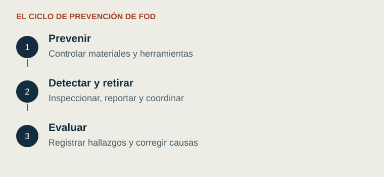

03 / Investigación y evidencia
FOD y prevención de daños por objetos extraños
Objetos pequeños, consecuencias importantes: del hallazgo a la prevención.

La sigla FOD se utiliza para referirse a objetos extraños o a los daños que ocasionan. Conviene diferenciar foreign object debris, el material ubicado donde representa un peligro, de foreign object damage, el daño resultante. La FAA (s. f.-b) define el FOD aeroportuario por su ubicación inapropiada y su capacidad de lesionar personas o dañar aeronaves. Una pieza pequeña puede, por tanto, adquirir relevancia operacional cuando se encuentra en una pista, plataforma o zona de trabajo.
Fuentes y consecuencias
Entre los ejemplos del documento del equipo se encuentran tornillos, tuercas, fragmentos de pavimento, restos de neumáticos, herramientas, alambres, plásticos y objetos personales. El riesgo depende de dónde se encuentran y de cómo interactúan con la aeronave: pueden alcanzar componentes, afectar neumáticos o convertirse en proyectiles. La evaluación debe considerar el contexto, no solamente el tamaño visible del objeto (FAA, s. f.-b).
Además de los daños físicos, un hallazgo puede requerir inspecciones, interrupciones de servicio y reparaciones. En este trabajo no se incluye una cifra económica global porque su interpretación exige comprobar el año, el alcance y la metodología de estimación. La relevancia preventiva se sostiene en los mecanismos de daño, sin necesidad de presentar costos sin respaldo.
El accidente del Concorde como evidencia
El informe del Bureau d’Enquêtes et d’Analyses pour la Sécurité de l’Aviation Civile [BEA] (2002) sobre el accidente del Concorde F-BTSC, ocurrido el 25 de julio de 2000 en Gonesse, describe una secuencia iniciada al pasar un neumático sobre una pieza metálica desprendida de otra aeronave. La destrucción del neumático dio lugar a un impacto de fragmentos y a un proceso de transferencia de energía que contribuyó a la rotura del tanque, seguido por fuga de combustible e incendio.
Esta explicación es más precisa que afirmar simplemente que el metal perforó directamente el tanque. El caso evidencia una cadena de acontecimientos y permite vincular el control de objetos extraños con el diseño, las inspecciones y la investigación técnica. No implica que cualquier objeto produzca el mismo desenlace; muestra por qué no debe descartarse un peligro únicamente por parecer pequeño.
Prevención y control
La circular AC 150/5210-24A organiza la gestión del FOD en cuatro áreas: prevención, detección, retirada y evaluación. Incluye formación del personal, orden y limpieza, control de herramientas e inspección de superficies. Las barredoras y los sistemas de detección pueden apoyar el programa, pero no sustituyen la asignación de responsabilidades ni el seguimiento de los hallazgos (FAA, 2024).
Un programa debe precisar quién inspecciona, cómo informa y quién autoriza la actuación. Si se detecta un objeto en un área operacional, la intervención debe seguir los procedimientos de acceso y coordinación; entrar por iniciativa propia en una pista puede generar un peligro adicional. La mejora consiste en retirar el objeto con seguridad e identificar su procedencia para evitar recurrencias (FAA, 2024).
La revisión de Shan et al. (2025) compara inspecciones, sensores ópticos, radares y métodos de inteligencia artificial para detectar FOD. Los autores identifican posibilidades de mejora mediante fusión de sensores, pero también limitaciones de los datos de entrenamiento, la demanda computacional y las condiciones ambientales. Al contrastarla con la guía de gestión de la FAA (2024), se aprecia una diferencia de enfoque: la revisión examina tecnologías y retos de investigación, mientras la circular organiza las acciones del programa. El análisis del equipo es que un detector debe evaluarse dentro del proceso de confirmación y retirada; detectar un objeto no equivale a eliminarlo.
Como aplicación propuesta por el equipo, en un taller escolar puede registrarse el inventario de herramientas antes y después de una tarea y revisar el área al terminar. Es una adaptación educativa del principio de control, no un procedimiento certificado para una operación real. Su utilidad es mostrar que la prevención empieza antes de que aparezca el daño.
Evaluar la prevención sin confundir actividad con resultado
Como propuesta de análisis del equipo, registrar que se realizó una inspección no basta para saber si el control fue eficaz. Conviene distinguir la acción ejecutada, el hallazgo y la medida que evita su repetición. Si un taller encuentra varias veces el mismo tipo de pieza suelta, retirarla resuelve la amenaza inmediata, pero todavía falta investigar su origen. La pregunta cambia de “¿quién recogió el objeto?” a “¿por qué sigue apareciendo?”. Esta forma de revisar el problema conecta el FOD con el mantenimiento, la organización y la comunicación. El ejemplo es una propuesta educativa, no una medición de la eficacia de un programa real ni una instrucción para intervenir en un aeropuerto.
Conclusión
La prevención del FOD requiere observar el entorno y actuar mediante procedimientos definidos. La tecnología puede ampliar la vigilancia, mientras las inspecciones y el control de herramientas aportan medidas complementarias. El análisis de las fuentes permite concluir que una solución debe evaluarse por su integración con la confirmación, la retirada y el seguimiento del objeto. La enseñanza del caso del Concorde es la importancia de comprender la secuencia completa de acontecimientos, sin reducirla a una frase llamativa. En nuestra formación aeronáutica, identificar materiales sueltos y revisar el trabajo terminado permite practicar una atención preventiva. En una operación real, estas acciones siempre deben sujetarse a las responsabilidades, la capacitación y las autorizaciones correspondientes.
Las citas de este artículo se desarrollan en la bibliografía completa.
Aplica lo aprendido · 03
Una decisión con evidencia
Actividad local: no solicita nombre, correo ni almacena tus respuestas. Basada en las fuentes del artículo.